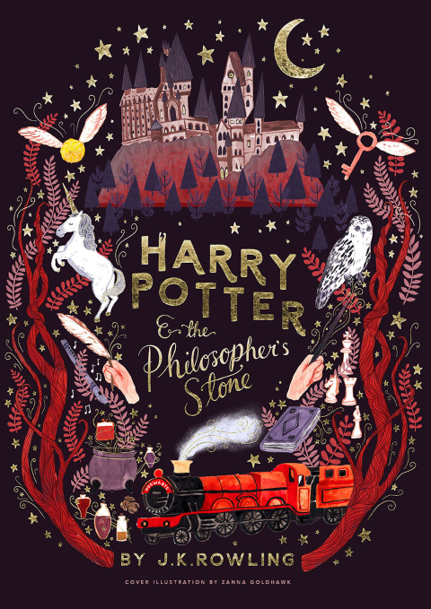
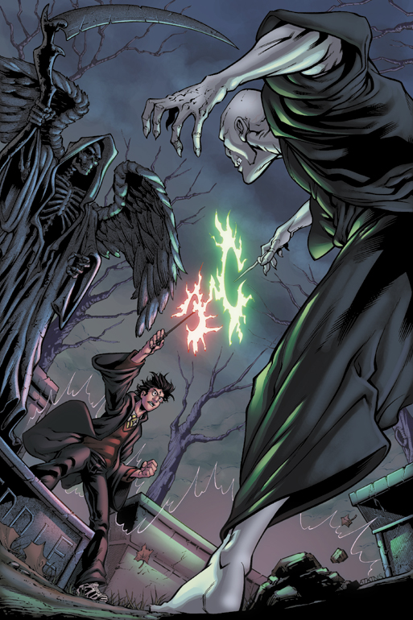

Harry Potter my Childhood Best Friend.
By Anandita Dhar
Like many people who were born in the late 90’s to the early 2000’s, my youth was indelibly shaped by J.K. Rowling’s Harry Potter. From getting my hands on the latest books to lining up to watch the new films, for a diehard fan like me, Harry can sometimes feel more like a childhood best friend than a fictional character.
Starting from the first book The Philosopher's Stone, Rowling followed the boy who lived and his friends through their teenage years, paying as close attention to crushes, school dances, exams, potion-making, house elves). But, crucially, the series was unafraid to grow darker and more serious as it wore on.

The later books, especially from Harry Potter and the Order of the Phoenix onwards, show what it’s like to carry the weight of awful things; they go further than most children’s literature, doubling down on the guilt, fear, violence, and, ultimately, death that the young heroes face.
The Harry Potter series is, about an orphan who happens to be a wizard. It is about mythical creatures, and magical castles, and found family. It is also a story absolutely filled with images of death. The eight-part series is bookended by loss, beginning with the murder of Harry’s parents by the evil Lord Voldemort when the boy is a year old, and culminating in Harry’s own death at age 17.
He grows up in an abusive household with his aunt, uncle, and cousin, but starting when he’s 11, Harry spends most of the year at Hogwarts School of Witchcraft and Wizardry, a place where violence abounds, ranging from spells gone awry to wizard duels to all-out war. I, as a reader, believed that Harry had gotten whiny, unpredictable, and irritating, seemingly discounting the fact that before the fifth book takes place, he had watched the execution of his friend. When I reread The Order of the Phoenix, I see Harry as a teenager who, like most children exposed to tragedy, finds himself caught between growing up incredibly quickly and wanting desperately to remain the boy he was before. But his friends and family are just as annoyed and confused as WHATTT???

The last three books of the series are a lesson in resisting, and in healing, which is just as important as facing the trauma itself. The Harry of The Deathly Hallows is shouting much less. The emotional scars are still there, but they haven’t destroyed him. This, more than anything else, is what makes the series so important: It shows a young man who locates strength in the terrible things that have happened to him. It’s what all survivors strive for. The final book shows our hero battling evil, losing more people he loves, and facing Lord Voldemort—once and for all. Near the end of the novel, he willingly walks to his death; at no point does the series pretend that children can ever be protected from heartache, or that they can’t grow from it.
I feel that the books also teach readers that finding people who understand us, and searching out shared experiences, helps.